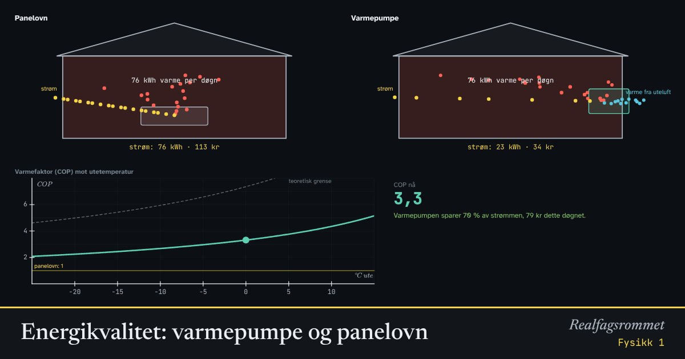

Energikvalitet: varmepumpe og panelovn
En panelovn gjør 1 kWh strøm om til 1 kWh varme. En varmepumpe bruker strømmen til å hente varme fra uteluften, og kan gi 3–4 kWh varme per kWh strøm. Hvordan er det mulig?
Start animasjonen
Formler
Om animasjonen
Energikvalitet: Elektrisk energi kan gjøres om til nesten hva som helst, og har høy kvalitet. Varme ved romtemperatur har lav kvalitet: Den kan bare brukes til å holde noe varmt. Energi går aldri tapt, men kvaliteten synker i alle omforminger.
En panelovn gjør elektrisk energi om til varme med virkningsgrad nær 100 %. Det høres bra ut, men den bruker høykvalitetsenergi til noe som lavkvalitetsenergi kunne gjort.
En varmepumpe virker som et kjøleskap baklengs: Den pumper varme fra kald uteluft inn i huset. Strømmen driver pumpen. Varmen som kommer inn, er strømmen pluss varmen hentet ute. Forholdet kalles COP.
Jo kaldere det er ute, jo hardere må pumpen jobbe, og COP synker. Den teoretiske grensen bestemmes av temperaturene i kelvin. Huset her trenger varme etter hvor kaldt det er ute.
Prøv dette
Lett
Bruk startverdiene (0 °C ute og 21 °C inne). Hva er COP? Hva betyr tallet?
Hint
COP er hvor mye varme varmepumpen gir for hver kWh strøm den bruker.
Løsningsforslag
COP er 3,31.
Det betyr at varmepumpen gir 3,31 kWh varme for hver kWh strøm. En panelovn gir bare 1 kWh varme per kWh strøm.
Senk temperaturen ute fra 15 °C til −25 °C. Hva skjer med COP og med varmebehovet til huset?
Hint
Se på COP og varmebehovet i panelet.
Løsningsforslag
COP synker fra 5,15 ved 15 °C til 2,08 ved −25 °C.
Varmebehovet øker samtidig fra 22 til 166 kWh per døgn. Når det er kaldest, trenger huset mest varme, og varmepumpen virker dårligst.
Hva koster det å varme huset et døgn med panelovn og med varmepumpe, ved 0 °C ute og strømpris 1,50 kr/kWh?
Hint
Les av kostnadene i panelet.
Løsningsforslag
Panelovnen koster 113 kr, og varmepumpen 34 kr per døgn.
Varmepumpen koster omtrent en tredjedel, fordi den gir 3,3 ganger så mye varme for hver kWh strøm.
Middels
Regn ut hvor mye strøm du sparer med varmepumpe i stedet for panelovn ved 0 °C ute. Bruk varmebehovet og COP i panelet. Hvor mange prosent er det?
Hint
Panelovnen bruker like mye strøm som varmebehovet. Varmepumpen bruker varmebehovet delt på COP.
Løsningsforslag
Varmebehovet er 75,6 kWh per døgn, så panelovnen bruker 75,6 kWh strøm.
Varmepumpen bruker kWh strøm.
Du sparer kWh, altså %.
Er det i strid med energibevaring at varmepumpen gir mer varme enn strømmen den bruker? Forklar hvor den ekstra varmen kommer fra.
Hint
Se på pilene i animasjonen. Hvor kommer energien fra, i tillegg til strømmen?
Løsningsforslag
Nei. Varmepumpen lager ikke energi. Den flytter varme fra uteluften og inn i huset, og strømmen brukes til å drive pumpen.
Varmen som kommer inn, er strømmen pluss varmen som er hentet ute. Ved COP 3,31 kommer 1 kWh fra strømmen og 2,31 kWh fra uteluften.
Selv kald luft på 0 °C inneholder mye energi. Molekylene beveger seg fortsatt fort. Først ved det absolutte nullpunktet, −273 °C, er det ikke mer varme å hente.
Hvorfor synker COP når det blir kaldere ute? Bruk formelen for største mulige COP. Regn den ut for 0 °C ute og 21 °C inne, når varmepumpen jobber mellom −6 °C og 36 °C.
Hint
Temperaturene må være i kelvin: . Varmepumpen må varme opp et medium litt over romtemperatur og kjøle et medium litt under utetemperaturen.
Løsningsforslag
K og K.
Når det blir kaldere ute, øker temperaturforskjellen i nevneren, og COP synker. Pumpen må «løfte» varmen et lengre stykke.
Ekte varmepumper når omtrent 45 % av den teoretiske grensen. I animasjonen er COP .
Vanskelig
Hvor mye sparer du i løpet av en vinter med 120 dager der det i snitt er 0 °C ute? Varmepumpen koster 30 000 kr installert. Hvor mange år tar det før den har betalt seg, med strømpris 1,50 kr/kWh?
Hint
Finn innsparingen per døgn i panelet. Gang med antall dager, og del prisen på innsparingen per år.
Løsningsforslag
Per døgn sparer du omtrent kr.
Over 120 dager blir det kr per år.
Tilbakebetalingstida er år. Høyere strømpris gir kortere tid. Resten av året trenger huset mindre varme, men varmepumpen sparer litt da også.
Det er −25 °C ute. Hvor mye av varmen kommer fra uteluften, og hvor mye fra strømmen? Hvorfor har mange varmepumper en elektrisk varmekolbe i tillegg?
Hint
Ved −25 °C er COP 2,08 og varmebehovet 166 kWh per døgn. Strømmen er varmebehovet delt på COP.
Løsningsforslag
Strømmen er kWh, og varmen fra uteluften er kWh per døgn.
Selv ved −25 °C henter varmepumpen altså mer enn halvparten av varmen fra uteluften.
Men når det er svært kaldt, er varmebehovet størst og varmepumpen minst effektiv. Mange varmepumper klarer ikke å gi nok effekt da. En varmekolbe eller en panelovn tar over de kaldeste dagene. Det er også da strømnettet er mest belastet.
Forklar hva som menes med energikvalitet. Hvorfor er det sløsing å bruke strøm i en panelovn, selv om virkningsgraden er nesten 100 %?
Hint
Hva kan du gjøre med 1 kWh strøm, og hva kan du gjøre med 1 kWh varme ved romtemperatur?
Løsningsforslag
Strøm har høy kvalitet. Den kan drive motorer, lys, datamaskiner og varmepumper, og den kan gjøres om til nesten alle andre energiformer.
Varme ved romtemperatur har lav kvalitet. Den kan nesten bare brukes til å holde noe varmt, og den kan ikke gjøres tilbake til strøm.
Panelovnen gjør 1 kWh høykvalitetsenergi om til 1 kWh lavkvalitetsenergi. Varmepumpen bruker den samme kilowattimen til å hente 2–3 kWh varme som allerede finnes ute. Da gjør strømmen mye mer nytte.
Energi går aldri tapt, men kvaliteten synker i hver omforming. Det er termodynamikkens 2. lov.
Kompetansemål
- Fysikk 1: Påstander og argumenter om energi og klima
- Fysikk 1: Energiomforming, energikvalitet og virkningsgrad
Mer om energi, varme og svingninger
- Energibevaring: stilling, fart og varme
- Energiomforming og virkningsgrad
- Temperatur og varme: is blir til damp
- Spesifikk varmekapasitet: varmt og kaldt blandes
- Partikkelmodellen og den ideelle gassloven
- Fjær og harmonisk svingning
- Vindkraft: hvor mye energi er det i vinden?
- Strømforsyning: vind, sol, vann og gass